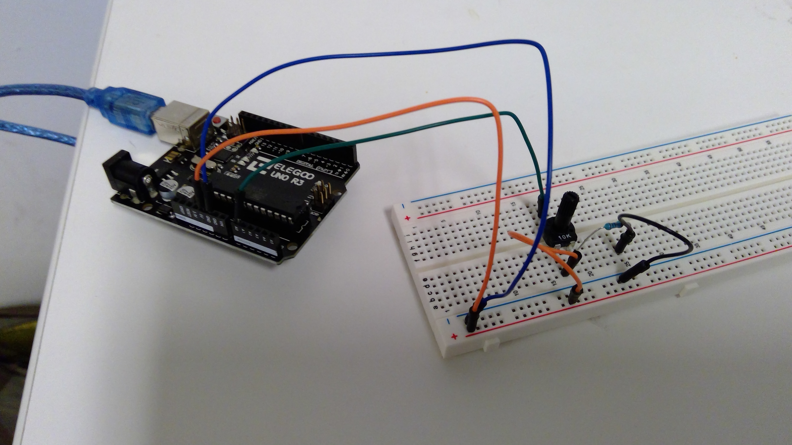
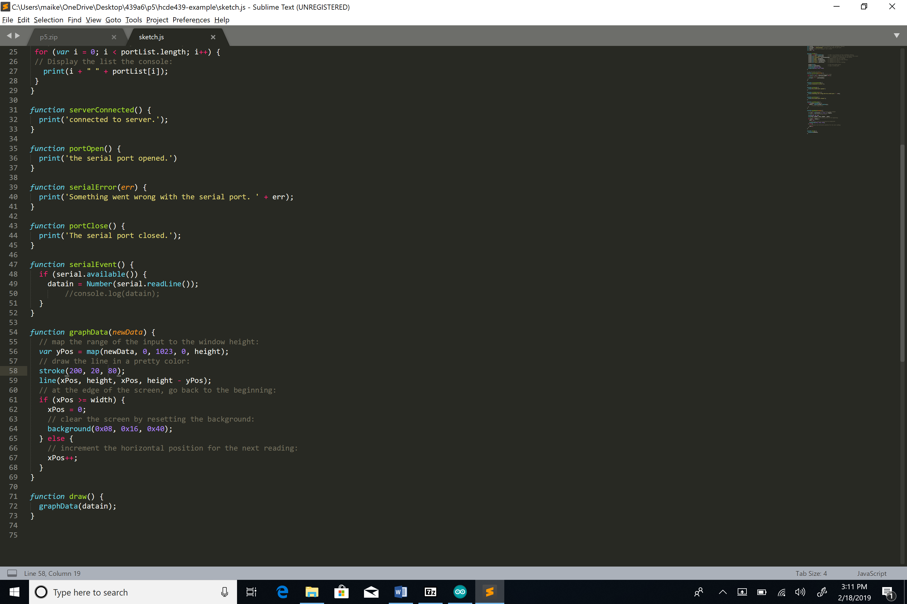

Maike's Assignment 6, Datalogging!
This program creates an interactive webpage with p5.js that interacts with data from the arduino via serial. When the user spins the potentiometer, the webpage displays vertical lines that move higher or lower depending on the reading.
Here is a picture of the circut:

Below is a gif of the program. As I turn the potentiometer to the right, the pink lines on the webpage grow, and as I turn it to the left, the lines shrink.

Below is a picture of the p5 communication code (the btm half). Most noteworthy is the draw function, which calls the graphData function and results in the visual representation of the potentiometer reading.

Schematic:
Here is my code:
void setup() {
Serial.begin(9600); //begin serial communication
}
void loop() {
int pot = analogRead(A0); // reads the value from the potentiometer
Serial.println(pot); // prints the value to serial
delay(50); // pause
}